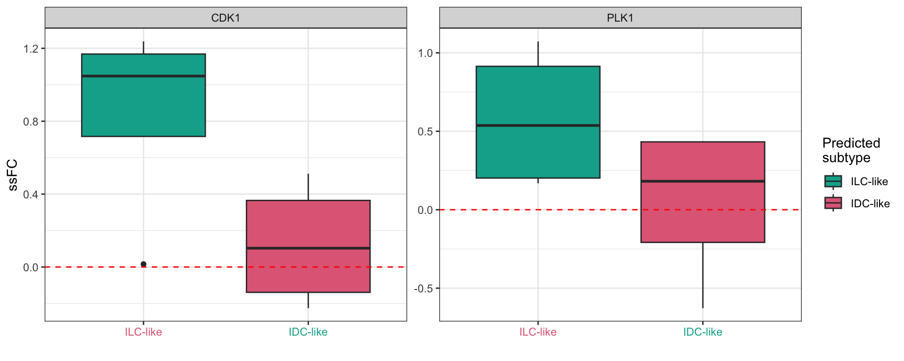
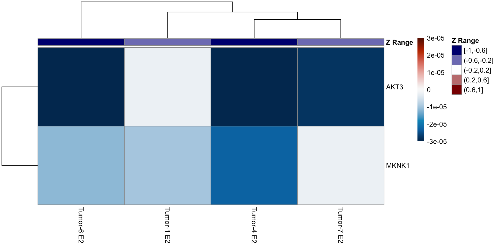

ER_signal
2022-09-09
Last updated: 2023-09-19
Checks: 7 0
Knit directory: WenjunLiu_Thesis_Chapter4/
This reproducible R Markdown analysis was created with workflowr (version 1.7.0). The Checks tab describes the reproducibility checks that were applied when the results were created. The Past versions tab lists the development history.
Great! Since the R Markdown file has been committed to the Git repository, you know the exact version of the code that produced these results.
Great job! The global environment was empty. Objects defined in the global environment can affect the analysis in your R Markdown file in unknown ways. For reproduciblity it’s best to always run the code in an empty environment.
The command set.seed(20200930) was run prior to running
the code in the R Markdown file. Setting a seed ensures that any results
that rely on randomness, e.g. subsampling or permutations, are
reproducible.
Great job! Recording the operating system, R version, and package versions is critical for reproducibility.
Nice! There were no cached chunks for this analysis, so you can be confident that you successfully produced the results during this run.
Great job! Using relative paths to the files within your workflowr project makes it easier to run your code on other machines.
Great! You are using Git for version control. Tracking code development and connecting the code version to the results is critical for reproducibility.
The results in this page were generated with repository version 772af9f. See the Past versions tab to see a history of the changes made to the R Markdown and HTML files.
Note that you need to be careful to ensure that all relevant files for
the analysis have been committed to Git prior to generating the results
(you can use wflow_publish or
wflow_git_commit). workflowr only checks the R Markdown
file, but you know if there are other scripts or data files that it
depends on. Below is the status of the Git repository when the results
were generated:
Ignored files:
Ignored: .Rhistory
Ignored: .Rproj.user/
Ignored: data/.DS_Store
Ignored: data/aligned/
Ignored: data/knott_scRNA.rds
Ignored: data/knott_scRNA.rds.zip
Ignored: data/raw/
Ignored: data/scRNA_ref/
Ignored: data/trimmed/
Ignored: output/permutedscore_tumor.rds
Ignored: output/tcga_breast.rds
Untracked files:
Untracked: .DS_Store
Untracked: data/CellLine_sSNAPPY.rds
Untracked: data/EMT_marker.txt
Untracked: hsa04066.pathview.png
Unstaged changes:
Modified: analysis/DHT_signal.Rmd
Modified: analysis/IDC_ILC.Rmd
Modified: analysis/hsa04066.pathview.png
Note that any generated files, e.g. HTML, png, CSS, etc., are not included in this status report because it is ok for generated content to have uncommitted changes.
These are the previous versions of the repository in which changes were
made to the R Markdown (analysis/E2_signal.Rmd) and HTML
(docs/E2_signal.html) files. If you’ve configured a remote
Git repository (see ?wflow_git_remote), click on the
hyperlinks in the table below to view the files as they were in that
past version.
| File | Version | Author | Date | Message |
|---|---|---|---|---|
| Rmd | 4b12097 | Wenjun-Liu | 2023-08-02 | tidy up all Rmd for thesis |
| html | 4b12097 | Wenjun-Liu | 2023-08-02 | tidy up all Rmd for thesis |
library(tidyverse)
library(yaml)
library(scales)
library(pander)
library(AnnotationHub)
library(ggraph)
library(igraph)
library(ensembldb)
library(cowplot)
library(magrittr)
library(sSNAPPY)
library(cqn)
library(DT)
library(multcomp)
library(rvest)
library(ggfortify)
library(xml2)
library(org.Hs.eg.db)
library(lme4)
library(colorspace)
library(lmerTest)
library(reactable)
library(corrplot)
library(scatterpie)
library(htmltools)
library(RColorBrewer)
library(pathview)
library(ggplotify)
library(msigdbr)
library(clusterProfiler)
library(patchwork)
source(here::here("analysis/smallFunctions/make_gsNetwork.R"))panderOptions("table.split.table", Inf)
panderOptions("big.mark", ",")
theme_set(theme_bw())config <- here::here("config/config.yml") %>%
read_yaml()
suffix <- paste0(config$tag)
sp <- config$ref$species %>%
str_replace("(^[a-z])[a-z]*_([a-z]+)", "\\1\\2") %>%
str_to_title()Setup
Gene Annotations
ah <- AnnotationHub() %>%
subset(rdataclass == "EnsDb") %>%
subset(str_detect(description, as.character(config$ref$release))) %>%
subset(genome == config$ref$build)
stopifnot(length(ah) == 1)ensDb <- ah[[1]]
genesGR <- read_rds(here::here("output/genesGR.rds"))Sample metadata and merged counts
Sample metadata and merged counts were read in and filtered as in the
dge_analysis.Rmd. DGElists were formed for tumor samples and
cqn was applied for biases introduced by systematic
artefacts.
init_cellType <- read_delim(here::here("config/sample_meta.txt"), delim = "\t")
init_cellType <- init_cellType %>%
mutate(Stroma = ifelse(str_detect(Dominant_cell_type, regex("Stroma", ignore_case = T)), TRUE, FALSE),
Epithelial = ifelse(str_detect(Dominant_cell_type, regex("Epithelial", ignore_case = T)), TRUE, FALSE),
Ducts = ifelse(str_detect(Dominant_cell_type, regex("ducts", ignore_case = T)), TRUE, FALSE),
Fat = ifelse(str_detect(Dominant_cell_type, regex("fat", ignore_case = T)), TRUE, FALSE),
patient = str_replace(patient, "TH", "TH-")) %>%
pivot_longer(c("Stroma", "Epithelial", "Ducts", "Fat"),
names_to = "cell_type",
values_to = "TF") %>%
mutate(cell_type = ifelse(TF, cell_type, NA)) %>%
dplyr::select(-c("TF", "Dominant_cell_type")) %>%
.[!is.na(.$cell_type),] %>%
chop("cell_type") %>%
mutate(cell_type = vapply(.$cell_type, function(x){
paste(x,collapse = ";")
}, character(1)))samples <- config$samples %>%
here::here() %>%
read_tsv() %>%
left_join(init_cellType) %>%
mutate(
Filename = paste0(sample, ".r_1"),
condition = ifelse(Tumor,
paste("Tumor", treat, sep = "_"),
paste("Normal", treat, sep = "_")),
patient = vapply(.$patient, function(x){str_split(x, "-")[[1]][2]}, character(1)),
patient = ifelse(Tumor,
paste("Tumor", patient, sep = "-"),
paste("Normal",patient, sep = "-")),
desc = paste(patient, treat, sep = " ")
) %>%
dplyr::select(-c("name", "sample")) %>%
dplyr::rename(name = desc) %>%
mutate_if(
function(x){length(unique(x)) < length(x)},
as.factor
) %>%
mutate(
treat = relevel(treat, ref = "Veh")
)mergedSamples <- samples %>%
group_by(name, patient, treat, Tumor, cell_type, Tissue_type, Age, Diagnosis) %>%
tally()
tumor_sample <- mergedSamples %>%
dplyr::filter(Tumor == TRUE) %>%
droplevels()tumor_sample <- tumor_sample %>%
dplyr::mutate(
Diagnosis = ifelse(
str_detect(Diagnosis, "invasive"),
"ILC-like", "IDC-like"
),
Diagnosis = ifelse(
patient == "Tumor-8",
"IDC-like",
Diagnosis
),
Diagnosis = as.factor(Diagnosis)
)treat_cols <- c(
Veh = rgb(0.7, 0.7, 0.7),
DHT = rgb(0.8, 0.2, 0.2),
E2 = rgb(0.2, 0.2, 0.8),
`E2+DHT` = rgb(1, 0.4, 1)
)
tumor_cols <- hcl.colors(
n = length(unique(samples$Tumor)),
palette = "Zissou 1"
) %>%
setNames(unique(samples$Tumor))
patient_cols <- hcl.colors(
n = length(levels(mergedSamples$patient)),
palette = "Spectral"
) %>%
setNames(levels(mergedSamples$patient))
diag_cols <- readRDS("~/GSE800098/output/diag_cols.rds")treat_shapes <- c(
Veh = 1,
DHT = 19,
E2 = 15,
`E2+DHT` = 17
)# counts <- here::here("data/aligned/counts/counts.out.gz") %>%
# gzfile() %>%
# read_tsv(comment = "#") %>%
# dplyr::select(Geneid, ends_with("bam")) %>%
# rename_at(vars(ends_with("bam")), dirname) %>%
# rename_all(basename) %>%
# column_to_rownames("Geneid")# mergedCounts <- counts %>%
# rownames_to_column("gene_id") %>%
# pivot_longer(
# cols = -gene_id,
# names_to = "Filename",
# values_to = "counts"
# ) %>%
# left_join(samples, by = "Filename") %>%
# group_by(
# gene_id, name, patient, treat, Tumor) %>%
# summarise(counts = sum(counts), .groups = "drop") %>%
# pivot_wider(
# id_cols = gene_id,
# values_from = counts,
# names_from = name
# ) %>%
# column_to_rownames("gene_id")
# saveRDS(mergedCounts, here::here("data/mergedCounts.rds"))
mergedCounts <- readRDS(here::here("data/mergedCounts.rds")) used (Mb) gc trigger (Mb) limit (Mb) max used (Mb)
Ncells 11741852 627.1 18806338 1004.4 NA 15621546 834.3
Vcells 27927021 213.1 44947274 343.0 204800 36482516 278.4The filtered and normalised DGEList was loaded in.
dge_tumor <- readRDS(here::here("output/dge_tumor.rds"))cqNorma_tumor <- with(
dge_tumor,
cqn(
counts= counts,
x = genes$gc_content,
lengths = genes$ave_tx_len
)
)
dge_tumor$offset <- cqNorma_tumor$glm.offset
logCPM_tumor <- cqNorma_tumor$y + cqNorma_tumor$offsetpcaPost_tumor <- logCPM_tumor %>%
t() %>%
prcomp() gsTopology <- retrieve_topology(database = "kegg", species = "hsapiens")
logCPM_tumor2 <- logCPM_tumor
rownames(logCPM_tumor2) <- mapIds(ensDb,rownames(logCPM_tumor), "ENTREZID", keytype = "GENEID")
logCPM_tumor2 <- logCPM_tumor2[!is.na(rownames(logCPM_tumor2)),]
ssFC_tumor <- sSNAPPY::weight_ss_fc(logCPM_tumor2, tumor_sample, groupBy = "patient", treatColumn = "treat", sampleColumn = "name")
ssFC_tumor <- ssFC_tumor$weighted_logFC/ssFC_tumor$weight
weightedFC_tumor <- sSNAPPY::weight_ss_fc(logCPM_tumor2, tumor_sample, groupBy = "patient", treatColumn = "treat", sampleColumn = "name")
genePertScore_tumor <- raw_gene_pert(weightedFC_tumor$weighted_logFC, gsTopology)formatP <- function(p, m = 0.0001){
out <- rep("", length(p))
out[p < m] <- sprintf("%.2e", p[p<m])
out[p >= m] <- sprintf("%.4f", p[p>=m])
out
}Outputs of sSNAPPY workflow for tumor samples were read
in.
treat_sig_tumor <- readRDS(here::here("output/treat_sig_tumor.rds"))
normalised_tumor <- readRDS(here::here("output/normalisedScores_tumor.rds"))normalised_tumor_mat <- normalised_tumor %>%
dplyr::select(gs_name, sample, robustZ) %>%
pivot_wider(
names_from = "sample",
values_from = "robustZ"
) %>%
column_to_rownames("gs_name")new_diag_col <- qualitative_hcl(2, palette = "Dark 3") %>%
set_names(c("IDC-like", "ILC-like"))
new_treat_col <- qualitative_hcl(4, palette = "Dynamic") %>%
set_names(levels(tumor_sample$treat))ssFC_tumor_df <- ssFC_tumor %>%
as.data.frame() %>%
rownames_to_column("entrezid") %>%
mutate(
entrezid = str_remove_all(entrezid, "ENTREZID.")
) %>%
left_join(
genesGR %>%
as.data.frame() %>%
unnest(entrezid) %>%
mutate(entrezid = as.character(entrezid)) %>%
dplyr::select(entrezid, gene_name)
) %>%
pivot_longer(
cols = contains("Tumor"),
names_to = "name",
values_to = "ssFC"
) %>%
left_join(
tumor_sample
) load(system.file("extdata", "entrez2name.rda", package = "sSNAPPY"))logCPM_tumor_df <- logCPM_tumor %>%
as.data.frame() %>%
rownames_to_column("gene_id") %>%
pivot_longer(
cols = -"gene_id",
names_to = "name",
values_to = "logCPM"
) %>%
left_join(
tumor_sample
) %>%
left_join(
dge_tumor$genes %>%
dplyr::select(gene_id, gene_name)
)normalised_tumor_df <- normalised_tumor %>%
dplyr::select(sample, gs_name, robustZ) %>%
pivot_wider(
names_from = "gs_name",
values_from = "robustZ"
)E2 response
lobular_E2_sample <- tumor_sample %>%
ungroup() %>%
dplyr::filter(
treat == "E2",
Diagnosis == "ILC-like"
) %>%
pull(name)e2_lobular_gs <- treat_sig_tumor %>%
dplyr::filter(
Comparison == "E2_invasive",
FDR < 0.05)
e2_lobular_gs <- pull(e2_lobular_gs, `t statistic`) %>%
set_names(e2_lobular_gs$gs_name)5 pathways were significantly perturbed by E2 in the lobular-like group, forming 2 main communities.
set.seed(123)
treat_sig_tumor %>%
dplyr::filter(
Comparison == "E2_invasive",
FDR < 0.05
) %>%
mutate(Status = ifelse(`t statistic` < 0, "Inhibited", "Activated")) %>%
plot_community(
gsTopology = gsTopology,
colorBy = "Status",
layout = "kk",
communityMethod = "leiden"
) +
scale_color_manual(
values = c("Inhibited" = "navyblue", "Activated" = "darkred"),
name = "Pathway Status"
) +
scale_fill_discrete_divergingx(palette = "Fall") +
theme(
panel.border = element_blank(),
legend.key.size = unit(10, "mm"),
legend.text = element_text(size = 9),
legend.title = element_text(size = 11),
legend.margin=margin(0,0,0,0)
# legend.position = "top",
# legend.justification = "right"
)A network of KEGG pathways significantly perturbed by E2 lobular-like PDEs.
| Version | Author | Date |
|---|---|---|
| 4b12097 | Wenjun-Liu | 2023-08-02 |
Cell Cycle
11 key genes potentially driving the activation of the Cell cycle pathway were identified, among which genes PLK1 and CDK1 played the most important roles (i.e. highest mean gene-wise perturbation scores). Both PLK1 (Polo-like kinase 1) and CDK1 (Cyclin-dependent kinase 1) are essential regulatory proteins involved in promoting cell cycle progression, and the dysregulation of these two genes has been linked to BC tumour growth.
CC_genePert <- genePertScore_tumor$`kegg.Cell cycle`
CC_path <- normalised_tumor_mat %>%
.["kegg.Cell cycle", colnames(.) %in% lobular_E2_sample]
CC_gene <- CC_genePert %>%
.[, colnames(.) %in% lobular_E2_sample] %>%
.[apply(., 1, function(x){sum(sign(x)) %in% c(-4, 4)}),] %>%
apply(1, function(y){
cor(
y,
as.vector(t(CC_path)))}) %>%
.[!is.na(.)] %>%
.[. > 0.6] %>%
names()anno_df_CC <- normalised_tumor_df %>%
mutate(
`Z Range` = cut(
`kegg.Cell cycle`, breaks = seq(-1, 1, length.out = 6), include.lowest = TRUE
)
) %>%
dplyr::select(sample, `Z Range`)
plot_gene_contribution(
CC_genePert %>%
.[rownames(.) %in% CC_gene, colnames(.) %in% lobular_E2_sample],
annotation_df = anno_df_CC,
mapEntrezID = entrez2name,
topGene = length(CC_gene),
annotation_colors = list(
`Z Range` = setNames(
colorRampPalette(c("navyblue", "white", "darkred"))(length(levels(anno_df_CC$`Z Range`))),
levels(anno_df_CC$`Z Range`)
)),
color = rev(divergex_hcl(100, palette = "RdBu")),
breaks = seq(-0.001, 0.001, length.out = 100),
cutree_rows = 2
) Gene-wise perturbation scores of the 11 key Cell cycle pathway genes potentially driving the activation of the pathway in E2-treated ILC-like tumours, where the columns are annotated with pathway-level perturbation scores.
| Version | Author | Date |
|---|---|---|
| 4b12097 | Wenjun-Liu | 2023-08-02 |
Although not statistically significant in the DE analyses, the median single-sample logFC (ssFC) of PLK1 and CDK1 was positive in both IDC- and ILC-like tumours after the E2 treatment. But the magnitudes of increase in expression were greater in ILC-like tumours.
CC_gene_name <- entrez2name %>%
dplyr::filter(
entrezid %in% CC_gene
) %>%
pull(mapTo)
CC_box <- ssFC_tumor_df %>%
dplyr::filter(
gene_name %in% c("PLK1", "CDK1"),
treat == "E2"
) %>%
ggplot(
aes(Diagnosis, ssFC, fill = Diagnosis)
) +
geom_boxplot() +
facet_wrap(~gene_name,
scales = "free_y") +
scale_fill_manual(
values = new_diag_col,
name = "Predicted\nsubtype"
) +
geom_hline(yintercept = 0, color = "red", linetype = "dashed") +
theme(
axis.text.x = element_text(colour = new_diag_col)
) +
labs(
y = "ssFC",
x = "")
CC_box
| Version | Author | Date |
|---|---|---|
| 4b12097 | Wenjun-Liu | 2023-08-02 |
Apoptosis
Using the same strategy, 5 potential candidates (CHUK, FADD, IL3RA, MAPK9, and TNFRSF10B ) driving the inhibition of the Apoptosis pathway in ILC-like tumours uponER activation were selected. All 5 genes had negative median ssFC in E2-treated ILC-like tumours, while the median ssFC of gene CHUK and IL3RA are positive in IDC-like tumours post E2 treatment.
Apop_genePert <- genePertScore_tumor$`kegg.Apoptosis`
Apop_path <- normalised_tumor_mat %>%
.["kegg.Apoptosis", colnames(.) %in% lobular_E2_sample]
Apop_gene <- Apop_genePert %>%
.[, colnames(.) %in% lobular_E2_sample] %>%
.[apply(., 1, function(x){sum(sign(x)) %in% c(-4, 4)}),] %>%
apply(1, function(y){
cor(
y,
as.vector(t(Apop_path)))}) %>%
.[!is.na(.)] %>%
.[. > 0.6] %>%
names()anno_df_Apop <- normalised_tumor_df %>%
mutate(
`Z Range` = cut(
`kegg.Apoptosis`, breaks = seq(-1, 1, length.out = 6), include.lowest = TRUE
)
) %>%
dplyr::select(sample, `Z Range`)
plot_gene_contribution(
Apop_genePert %>%
.[rownames(.) %in% Apop_gene, colnames(.) %in% lobular_E2_sample],
filterBy = "max.abs",
annotation_df = anno_df_Apop,
mapEntrezID = entrez2name,
topGene = 10,
annotation_colors = list(
`Z Range` = setNames(
colorRampPalette(c("navyblue", "white", "darkred"))(length(levels(anno_df_Apop$`Z Range`))),
levels(anno_df_Apop$`Z Range`)
)),
color = rev(divergex_hcl(100, palette = "RdBu")),
breaks = seq(-8.526216e-05, 8.526216e-05, length.out = 100)
)
| Version | Author | Date |
|---|---|---|
| 4b12097 | Wenjun-Liu | 2023-08-02 |
Apop_gene_name <- entrez2name %>%
dplyr::filter(
entrezid %in% Apop_gene
) %>%
pull(mapTo)
apop_box <- ssFC_tumor_df %>%
dplyr::filter(
gene_name %in% setdiff(Apop_gene_name, "MAPK8"),
treat == "E2"
) %>%
ggplot(
aes(Diagnosis, ssFC, fill = Diagnosis)
) +
geom_boxplot() +
facet_wrap(~gene_name,
scales = "free_y") +
scale_fill_manual(
values = new_diag_col,
name = "Predicted\nsubtype"
) +
geom_hline(yintercept = 0, color = "red", linetype = "dashed") +
theme(
axis.text.x = element_text(colour = new_diag_col)
) +
labs(
y = "ssFC",
x = "")
apop_box
| Version | Author | Date |
|---|---|---|
| 4b12097 | Wenjun-Liu | 2023-08-02 |
JAK-STAT signaling pathway
In addition to the two cell death-related pathways, the three other pathways that were inhibited in E2-treated ILC-like tumours were related to signal transduction. Firstly, the JAK-STAT signalling pathway, a crucial intracellular signalling cascade that influences diverse cellular processes such as proliferation, differentiation, and immune responses, was predicted to be inhibited. Since the KEGG JAK-STAT signalling pathway involves various processes, to elucidate the biological meaning of the observed inhibition, the functional roles of pathway genes making the largest contribution to the altered pathway activity were inspected. 6 genes with negative gene-wise perturbation scores across all E2-treated lobular-like samples that are potentially the main drivers behind the inhibition of the JAK-STAT pathway were selected.
JAK_genePert <- genePertScore_tumor$`kegg.JAK-STAT signaling pathway`
JAR_path <- normalised_tumor_mat %>%
.["kegg.JAK-STAT signaling pathway", colnames(.) %in% lobular_E2_sample]
JAR_gene <- JAK_genePert %>%
.[, colnames(.) %in% lobular_E2_sample] %>%
.[apply(., 1, function(x){sum(sign(x)) %in% c(-4, 4)}),] %>%
apply(1, function(y){
cor(
y,
as.vector(t(JAR_path)))}) %>%
.[!is.na(.)] %>%
.[. > 0.6] %>%
names()While many of the identified driver genes are involved in the upstream cytokine-cytokine receptor interaction processes, the cell cycle inhibitor gene CDKN1A (also known as p21 ) was also on the list. Although not statistically significant, the median ssFC of CDKN1A was negative in both groups of E2-treated tumours, indicating potential down-regulation of this cell cycle inhibitor gene upon the E2 treatment. Therefore, the inhibition of the JAK-STAT pathway likely reflects the down-regulation of the cell cycle inhibition process, aligning with the observed activation of the Cell cycle and inhibition of the Apoptosis pathway.
anno_df_jak <- normalised_tumor_df %>%
mutate(
`Z Range` = cut(
`kegg.JAK-STAT signaling pathway`, breaks = seq(-1, 1, length.out = 6), include.lowest = TRUE
)
) %>%
dplyr::select(sample, `Z Range`)
plot_gene_contribution(
JAK_genePert %>%
.[rownames(.) %in% JAR_gene, colnames(.) %in% lobular_E2_sample],
filterBy = "max.abs",
annotation_df = anno_df_jak,
mapEntrezID = entrez2name,
topGene = 10,
annotation_colors = list(
`Z Range` = setNames(
colorRampPalette(c("navyblue", "white", "darkred"))(length(levels(anno_df_jak$`Z Range`))),
levels(anno_df_jak$`Z Range`)
)),
color = rev(divergex_hcl(100, palette = "RdBu")),
breaks = seq(-0.00003, 0.00003, length.out = 100)
)
| Version | Author | Date |
|---|---|---|
| 4b12097 | Wenjun-Liu | 2023-08-02 |
# pathview(gene.data = ssFC_tumor %>%
# .[rownames(.) %in% JAR_gene, colnames(.) %in% lobular_E2_sample] %>%
# apply(., 1, median) %>%
# set_names(
# str_remove_all(
# names(.), "ENTREZID:"
# )
# ),
# pathway.id = "04630",
# species = "hsa",
# kegg.dir = here::here("figure/"),
# low = list(gene ="skyblue", cpd = "black"),
# mid = list(gene ="grey", cpd = "black"),
# high = list(gene ="red", cpd = "black"),
# )
knitr::include_graphics(
"/Users/wenjunliu/20131906_HickeyT_JC_NormalBreast/pathview_figure/JAKSAT.png",
error = FALSE
)
CDKN1A_box <- ssFC_tumor_df %>%
dplyr::filter(
gene_name == "CDKN1A",
treat == "E2"
) %>%
ggplot(
aes(Diagnosis, ssFC, fill = Diagnosis)
) +
geom_boxplot() +
facet_wrap(~gene_name,
scales = "free_y") +
scale_fill_manual(
values = new_diag_col,
name = "Predicted\nsubtype"
) +
geom_hline(yintercept = 0, color = "red", linetype = "dashed") +
theme(
axis.text.x = element_text(colour = new_diag_col)
) +
labs(
y = "ssFC",
x = "")
CDKN1A_box
| Version | Author | Date |
|---|---|---|
| 4b12097 | Wenjun-Liu | 2023-08-02 |
WNT signaling
We inspected the main driver genes behind the inhibition of the WNT signalling pathway in our E2-treated ILC-like tumours and found the involvement of three WNT family genes (WNT2B, WNT9A, and WNT7B).
WNT_genePert <- genePertScore_tumor$`kegg.Wnt signaling pathway`
WNT_path <- normalised_tumor_mat %>%
.["kegg.Wnt signaling pathway", colnames(.) %in% lobular_E2_sample]
WNT_gene <- WNT_genePert %>%
.[, colnames(.) %in% lobular_E2_sample] %>%
.[apply(., 1, function(x){sum(sign(x)) %in% c(-4, 4)}),] %>%
apply(1, function(y){
cor(
y,
as.vector(t(WNT_path)))}) %>%
.[!is.na(.)] %>%
.[. > 0.6] %>%
names()
WNT_gene <- intersect(WNT_gene, rownames(ssFC_tumor))anno_df_WNT <- normalised_tumor_df %>%
mutate(
`Z Range` = cut(
`kegg.Wnt signaling pathway`, breaks = seq(-1, 1, length.out = 6), include.lowest = TRUE
)
) %>%
dplyr::select(sample, `Z Range`)
plot_gene_contribution(
WNT_genePert %>%
.[rownames(.) %in% WNT_gene, colnames(.) %in% lobular_E2_sample],
filterBy = "mean",
annotation_df = anno_df_WNT,
mapEntrezID = entrez2name,
topGene = 10,
annotation_colors = list(
`Z Range` = setNames(
colorRampPalette(c("navyblue", "white", "darkred"))(length(levels(anno_df_WNT$`Z Range`))),
levels(anno_df_WNT$`Z Range`)
)),
clustering_method = "average",
color = rev(divergex_hcl(100, palette = "RdBu")),
breaks = seq(-0.00003, 0.00003, length.out = 100)
)
| Version | Author | Date |
|---|---|---|
| 4b12097 | Wenjun-Liu | 2023-08-02 |
wnt_complex <- entrez2name %>%
dplyr::filter(
entrezid %in% WNT_gene,
str_detect(mapTo, "WNT")
) %>%
pull(mapTo)
wnt_box <- ssFC_tumor_df %>%
dplyr::filter(
gene_name %in% c(wnt_complex, "WNT4"),
treat == "E2"
) %>%
mutate(
gene_name = factor(gene_name, levels = c("WNT2B" ,"WNT7B", "WNT9A", "WNT4"))) %>%
ggplot(
aes(Diagnosis, ssFC, fill = Diagnosis)
) +
geom_boxplot() +
facet_wrap(~gene_name,
scales = "free_y") +
scale_fill_manual(
values = new_diag_col,
name = "Predicted\nsubtype"
) +
scale_alpha_manual(name = "Subtype", values = c(.3, 1),
guide = FALSE) +
geom_hline(yintercept = 0, color = "red", linetype = "dashed") +
theme(
axis.text.x = element_text(colour = new_diag_col)
) +
labs(
y = "ssFC",
x = "")
wnt_box
| Version | Author | Date |
|---|---|---|
| 4b12097 | Wenjun-Liu | 2023-08-02 |
HIF signalling pathway
Lastly, the HIF-1 signalling pathway was also significantly inhibited in ILC-like tumours as a response to ER activation. The two potential driver genes found for the HIF-1 signalling pathway are AKT3 and MKNK1.
HIF_genePert <- genePertScore_tumor$`kegg.HIF-1 signaling pathway`
HIF_path <- normalised_tumor_mat %>%
.["kegg.HIF-1 signaling pathway", colnames(.) %in% lobular_E2_sample]
HIF_gene <- HIF_genePert %>%
.[, colnames(.) %in% lobular_E2_sample] %>%
.[apply(., 1, function(x){sum(sign(x)) == -4}),] %>%
apply(1, function(y){
cor(
y,
as.vector(t(HIF_path)))}) %>%
.[!is.na(.)] %>%
.[. > 0.6] %>%
names()
HIF_gene <- intersect(HIF_gene, rownames(ssFC_tumor))anno_df_HIF <- normalised_tumor_df %>%
mutate(
`Z Range` = cut(
`kegg.HIF-1 signaling pathway`, breaks = seq(-1, 1, length.out = 6), include.lowest = TRUE
)
) %>%
dplyr::select(sample, `Z Range`)
plot_gene_contribution(
HIF_genePert %>%
.[rownames(.) %in% HIF_gene, colnames(.) %in% lobular_E2_sample],
filterBy = "mean",
annotation_df = anno_df_HIF,
mapEntrezID = entrez2name,
topGene = 10,
annotation_colors = list(
`Z Range` = setNames(
colorRampPalette(c("navyblue", "white", "darkred"))(length(levels(anno_df_HIF$`Z Range`))),
levels(anno_df_HIF$`Z Range`)
)),
clustering_method = "average",
color = rev(divergex_hcl(100, palette = "RdBu")),
breaks = seq(-0.00003, 0.00003, length.out = 100)
) 
| Version | Author | Date |
|---|---|---|
| 4b12097 | Wenjun-Liu | 2023-08-02 |
HIF_gene_name <- entrez2name %>%
dplyr::filter(
entrezid %in% HIF_gene
) %>%
pull(mapTo)
hif_box <- ssFC_tumor_df %>%
dplyr::filter(
gene_name %in% HIF_gene_name,
treat == "E2"
) %>%
ggplot(
aes(Diagnosis, ssFC, fill = Diagnosis)
) +
geom_boxplot() +
facet_wrap(~gene_name,
scales = "free_y") +
scale_fill_manual(
values = new_diag_col,
name = "Predicted\nsubtype"
) +
geom_hline(yintercept = 0, color = "red", linetype = "dashed") +
theme(
axis.text.x = element_text(colour = new_diag_col)
) +
labs(
y = "ssFC",
x = "")
hif_box
| Version | Author | Date |
|---|---|---|
| 4b12097 | Wenjun-Liu | 2023-08-02 |
Compare to Public Data
Sikora et al. ILC-specific E2 responses
library(readxl)
ILC_E2_public_full <- read_excel(
here::here("data/Sikora_ILC_E2_sig.xlsx"),
sheet = 6
) %>%
dplyr::rename(
gene_name = `Gene Symbol`
) %>%
left_join(
genesGR %>%
as.data.frame() %>%
dplyr::select(gene_id, gene_name)
) %>%
drop_na() In Invasive Lobular Carcinoma Cell Lines Are Characterized by Unique Estrogen-Mediated Gene Expression Patterns and Altered Tamoxifen Response, ILC cell lines MM134 and SUM44 were treated with 1 nmol/L E2 for 3 or 24 hours, prior to microarray was performed. DEGs derived from those two cell lines were compared against public data for three ER-pos IDC cell lines, and a list of ILC-specific DEGs were found.
# require(GEOquery)
# require(Biobase)
# library(biomaRt)
# gset <- getGEO("GSE50693", GSEMatrix =TRUE, getGPL=FALSE)
# gset <- gset[[1]]
# mart <- useMart("ENSEMBL_MART_ENSEMBL")
# mart <- useDataset("hsapiens_gene_ensembl", mart)
# total_range <- seq_len(nrow(exprs(gset)))
# sequence_size <- length(total_range) / 8
# # Use the split function to break the sequence into 8 smaller sequences
# smaller_sequences <- split(total_range, rep(1:8, each = sequence_size, length.out = length(total_range)))
# library(BiocParallel)
# param <- SnowParam(
# workers = 8,
# type = "SOCK"
# )
# annotLookup <- lapply(smaller_sequences, function(x){
# getBM(
# mart=mart,
# attributes=c(
# "affy_hg_u133a_2",
# "external_gene_name"),
# filter = "affy_hg_u133a_2",
# values = rownames(exprs(gset))[x], uniqueRows=TRUE)
# })
# annotLookup <- bind_rows(annotLookup)
# saveRDS(annotLookup, file = here::here("data/affy_to_name.rds"))
annotLookup <- readRDS(here::here("data/affy_to_name.rds"))
allGENE <- annotLookup %>% pull(external_gene_name) %>% unique()GOseq was used to perform an over-representation
analysis on those ILC-specific E2-regulated genes. Since only
differentially expressed genes were provided in the supplementary table,
the background gene-set was derived by: 1. Retrieve the series matrix
file from GEO using getGEO(). 2. Match the U133A 2.0 array
probe annotations to ensembl gene names using biomaRt’s
getBM() function.
14154 genes were considered to be the background gene.
ORA with GOseq
GOseq was used to test for enrichment of KEGG pathways
using the hypergeometric method. But none of the pathway passed the FDR
< 0.05 significance threshold.
gsTokeep <- readRDS(here::here("output/kg_gsTokeep.rds"))
kg <- sapply(gsTopology, rownames) %>%
do.call(cbind, .) %>%
as.data.frame() %>%
pivot_longer(
cols = everything(),
names_to = "gs_name",
values_to = "entrezid"
) %>%
dplyr::filter(gs_name %in% gsTokeep) %>%
left_join(
entrez2name %>%
dplyr::rename(gene_name = mapTo)
) %>%
left_join(genesGR %>%
as.data.frame() %>%
dplyr::select(gene_name, gene_id)) %>%
unique() %>%
dplyr::select(-entrezid)
kgByGene <- kg %>%
split(f = .$gene_id) %>%
lapply(pull, gs_name)
kgByGS <- kg %>%
split(f = .$gs_name) %>%
lapply(pull, gene_id)library(goseq)
pwf <- genesGR %>%
as.data.frame() %>%
distinct(gene_id, .keep_all = TRUE) %>%
dplyr::select(gene_id, ave_tx_len) %>%
mutate(Status = case_when(gene_id %in% ILC_E2_public_full$gene_id ~ 1, !gene_id %in% ILC_E2_public_full$gene_id ~ 0)) %>%
with(
nullp(
DEgenes = structure(
Status, names = gene_id
),
genome = "GRCh38.p16",
id = "ensGene",
bias.data =ave_tx_len,
plot.fit = FALSE
)
)
goseq <- goseq(
gene2cat = kgByGene,
pwf = pwf,
method = "Hypergeometric") %>%
as_tibble() %>%
dplyr::filter(numDEInCat > 0) %>%
mutate(
FDR_over = p.adjust(over_represented_pvalue, method = "fdr"),
FDR_under = p.adjust(under_represented_pvalue, method = "fdr")
) %>%
dplyr::rename(
gs_name = category,
nDE = numDEInCat,
nExpressed = numInCat
) %>%
left_join(kg) %>%
dplyr::select(
gs_name, nExpressed, nDE,
contains("pvalue"),
contains("FDR"),
gene_name, gene_id
) %>%
dplyr::filter(
gene_id %in% ILC_E2_public_full$gene_id
) %>%
chop(c("gene_name", "gene_id")) %>%
mutate(
gene_name = vapply(.$gene_name, function(x){
paste(x,collapse = "; ")
}, character(1)),
gene_id = vapply(.$gene_id, function(x){
paste(x,collapse = "; ")
}, character(1))
) %>%
dplyr::rename(DE = gene_name) %>%
mutate_at(
vars(contains(c("pvalue", "FDR"))),
formatP)4 pathways passed the FDR cut-off of 0.05 to be considered as significantly enriched but none of the significantly perturbed pathways we detected in E2-treated ILC-like tumours is on the list.
goseq %>%
dplyr::filter(FDR_over < 0.05) %>%
mutate(
gs_name = str_remove_all(gs_name, "kegg.")
) %>%
dplyr::select(-contains(c("under", "DE", "gene_id"))) %>%
mutate_all(as.factor) %>%
datatable(
filter = "top",
options = list(scrollY = '350px')
)ILC_E2_public <- read_delim(here::here("data/ILC_E2_genes.txt"), col_names = FALSE) %>%
set_colnames(c("gene_name", "type")) %>%
left_join(
genesGR %>%
as.data.frame() %>%
dplyr::select(gene_name, gene_id)
)
ILC_E2_public_ls <- ILC_E2_public %>%
split(f = .$type)e2_lobular_gs_public <- kg %>%
dplyr::filter(
gs_name %in% names(e2_lobular_gs)) %>%
# dplyr::filter(gene_name %in% ILC_E2_public_full$gene_name)
left_join(ILC_E2_public) %>%
drop_na() %>%
mutate(
gs_name = str_remove_all(gs_name, "kegg."),
color = ifelse(type == "ILC-down", "lightskyblue", "pink"),
type = as.factor(type)) %>%
.[order(.$type), ]%>%
mutate(gene_name = as.factor(gene_name))The author curated the most induced and repressed ILC-specific E2-regulated genes into an ILC-E2 gene-set. (Note that the ILC-specific genes were derived by intersecting ILC DEGs with IDC DEGs without considering the directionality). There were a total of 93 genes in the list, where 57 were uniquely down-regulated by E2 in the ILC cell lines and 36 were up-regulated.
useless_p <- e2_lobular_gs_public %>%
mutate(
color = ifelse(
color == "lightskyblue", "Down-regulated", "Up-regulated"
)
) %>%
ggplot(
aes(type, gs_name, fill = color)
) +
geom_tile() +
scale_fill_manual(
values = c(
"Down-regulated" = "lightskyblue",
"Up-regulated" = "pink"
),
name = "Direction of\nE2-regulation in\nILC-cell lines"
)
ILC_e2_both <- c("CDKN1C", "CXXC4","WNT4")3 of the public ILC-specific E2-responsive genes (CDKN1C, CXXC4 and WNT4) were found to be involved in pathways significantly perturbed in our cohort of E2-treated ILC-like tumours and had directional concordant changes in expression.
col <- e2_lobular_gs_public %>%
dplyr::select(gene_name, color) %>%
unique() %>%
.[order(.$gene_name),] %>%
pull(color)
library(ggh4x)
strips <- strip_themed(
background_x = elem_list_rect(
fill = adjustcolor(col, alpha.f = 0.5)
)
)
p1 <- ssFC_tumor_df %>%
dplyr::filter(
gene_name %in% ILC_e2_both,
treat == "E2"
) %>%
ggplot(
aes(Diagnosis, ssFC, fill = Diagnosis)
) +
geom_boxplot() +
facet_wrap2(.~gene_name,
scales = "free_y",
strip = strips) +
scale_fill_manual(
values = new_diag_col,
name = "Predicted\nsubtype"
) +
scale_alpha_manual(name = "Subtype", values = c(.3, 1),
guide = FALSE) +
geom_hline(yintercept = 0, color = "red", linetype = "dashed") +
theme(
strip.text = element_text(size = 18),
axis.text.x = element_text(size = 15,
colour = new_diag_col)
) +
xlab("Predicted Subtype")
plot_grid(
p1, get_legend(useless_p),
rel_widths = c(9,1)
)Single-sample logFCs of E2-treated samples for genes that were involved in significant pathway perturbation among ILC-like tumours and were chosen as ILC-specific E2-regulated genes in a public study. Background colors of the gene name strips indicate the directions of changes upon E2 treatment reported in the public data, where blue means E2-repressed and red means E2-induced.
| Version | Author | Date |
|---|---|---|
| 4b12097 | Wenjun-Liu | 2023-08-02 |
Nardone et al. FOXA1-ILC targets
Nardone et al. recently performed a comprehensive epigenome profiling study to compare ILC tumours against IDC and revealed enhanced recruitment of FOXA1, an important regulator of both ER and AR chromatin binding, in ILC. FOXA1 -ER interactions that lead to enhanced tumour progression and unfavourable outcomes were found to be unique to ILC tumours. 59 ILC-specific estrogen-induced FOXA1-targets that were reported by Nardone et al. are involved in pathways that were significantly perturbed by E2 in our ILC-like tumours, including one of the potential inhibitors of the Apoptosis pathway FADD.
FOXA1_ILC <- read_csv(here::here("data/FOXA1_ILC.csv")) %>%
dplyr::filter(pvalue < 0.05)
nardone_toPlot <- treat_sig_tumor %>%
dplyr::filter(
Comparison == "E2_invasive",
FDR < 0.05
) %>%
left_join(kg) %>%
dplyr::filter(gene_name %in% FOXA1_ILC$gene_name) %>%
mutate(gs_name = str_remove_all(gs_name, "kegg.")) %>%
dplyr::select(gene_name, gs_name) %>%
unique() %>%
left_join(
entrez2name %>%
dplyr::rename(gene_name = mapTo)
) %>%
pull(entrezid)
lobular_e2_fc <- ssFC_tumor %>%
.[, colnames(.) %in% lobular_E2_sample] %>%
apply(1, median)
lobular_e2_fcDir <- ifelse(lobular_e2_fc < 0, "Down-regulated", "Up-regualted")# all_drive <- c(CC_gene, Apop_gene, JAR_gene, WNT_gene, HIF_gene)
# intersect(all_drive, nardone_toPlot)g <- treat_sig_tumor %>%
dplyr::filter(
Comparison == "E2_invasive",
FDR < 0.05
) %>%
mutate(Status = ifelse(`t statistic` < 0, "Inhibited", "Activated")) %>%
plot_gs2gene(
gsTopology = gsTopology,
colorGsBy = "Status",
mapEntrezID = entrez2name,
layout = "kk",
geneFC = lobular_e2_fcDir[nardone_toPlot],
gsNameSize = 4,
gsNodeSize = 6,
geneNameSize = 3,
filterGeneBy = 0,
) +
scale_fill_manual(values = c("darkred", "lightskyblue"), name = "Pathway") +
scale_colour_manual(values = c("blue", "red"), name = "Gene\nDirection") +
theme(panel.border = element_blank(),
legend.margin=margin(0,0,0,0))
g
| Version | Author | Date |
|---|---|---|
| 4b12097 | Wenjun-Liu | 2023-08-02 |
Thesis Figure
Cell Death
# p1 <- plot_gene_contribution(
# CC_genePert %>%
# .[rownames(.) %in% CC_gene, colnames(.) %in% lobular_E2_sample],
# annotation_df = anno_df_CC,
# mapEntrezID = entrez2name,
# topGene = length(CC_gene),
# annotation_colors = list(
#
# `Z Range` = setNames(
# colorRampPalette(c("navyblue", "white", "darkred"))(length(levels(anno_df_CC$`Z Range`))),
# levels(anno_df_CC$`Z Range`)
# )),
# color = rev(divergex_hcl(100, palette = "RdBu")),
# breaks = seq(-0.001, 0.001, length.out = 100),
# cutree_rows = 2
# ) %>%
# as.ggplot()
# p2 <- CC_box
# cell_death <- (( p1 | p2) +
# plot_layout(widths = c(0.4, 0.2))) +
# plot_annotation(tag_levels = "A") &
# theme(
# plot.tag = element_text(size = 22, face = "bold" ),
# text = element_text(size = 14)
# )
# # png(
# # "/Users/wenjunliu/PhD_thesis/Images/chapter_04/cell_death.png",
# # width = 320, height =150, units='mm', res = 300
# # )
# # cell_death
# # dev.off()# p3 <- plot_gene_contribution(
# Apop_genePert %>%
# .[rownames(.) %in% Apop_gene, colnames(.) %in% lobular_E2_sample],
# filterBy = "max.abs",
# annotation_df = anno_df_Apop,
# mapEntrezID = entrez2name,
# topGene = 10,
# annotation_colors = list(
#
# `Z Range` = setNames(
# colorRampPalette(c("navyblue", "white", "darkred"))(length(levels(anno_df_Apop$`Z Range`))),
# levels(anno_df_Apop$`Z Range`)
# )),
# color = rev(divergex_hcl(100, palette = "RdBu")),
# breaks = seq(-8.526216e-05, 8.526216e-05, length.out = 100)
# ) %>%
# as.ggplot()
# p4 <- apop_box
# apop_pl <- ( p3 | p4) +
# plot_layout(widths = c(0.5, 0.4)) +
# plot_annotation(tag_levels = "A") &
# theme(
# plot.tag = element_text(size = 22, face = "bold" ),
# text = element_text(size = 14)
# )
# # png(
# # "/Users/wenjunliu/PhD_thesis/Images/chapter_04/apop_pl.png",
# # width = 330, height =180, units='mm', res = 300
# # )
# # apop_pl
# # dev.off()JAK-STAT pathway
# library(ggplotify)
# library(magick)
# p1 <- plot_gene_contribution(
# JAK_genePert %>%
# .[rownames(.) %in% JAR_gene, colnames(.) %in% lobular_E2_sample],
# filterBy = "max.abs",
# annotation_df = anno_df_jak,
# mapEntrezID = entrez2name,
# topGene = 10,
# annotation_colors = list(
#
# `Z Range` = setNames(
# colorRampPalette(c("navyblue", "white", "darkred"))(length(levels(anno_df_jak$`Z Range`))),
# levels(anno_df_jak$`Z Range`)
# )),
# color = rev(divergex_hcl(100, palette = "RdBu")),
# breaks = seq(-0.00003, 0.00003, length.out = 100)
# ) %>%
# as.ggplot()
# p2 <- image_read(
# here::here("pathview_figure/JAKSAT.png"))%>%
# image_ggplot()
# p3 <- CDKN1A_box# jaksat <-(( p1 | p3) +
# plot_layout(widths = c(0.9, 0.2))) / p2 +
# plot_layout(
# heights = c(0.3, 0.7)) +
# plot_annotation(tag_levels = "A") &
# theme(
# plot.tag = element_text(size = 22, face = "bold" ),
# text = element_text(size = 14)
# )
# png(
# "/Users/wenjunliu/PhD_thesis/Images/chapter_04/JAKSAT.png",
# width = 250, height =300, units='mm', res = 300
# )
# jaksat
# dev.off()WNT signaling pathway
# p1 <- plot_gene_contribution(
# WNT_genePert %>%
# .[rownames(.) %in% WNT_gene, colnames(.) %in% lobular_E2_sample],
# filterBy = "mean",
# annotation_df = anno_df_WNT,
# mapEntrezID = entrez2name,
# topGene = 13,
# annotation_colors = list(
# `Z Range` = setNames(
# colorRampPalette(c("navyblue", "white", "darkred"))(length(levels(anno_df_WNT$`Z Range`))),
# levels(anno_df_WNT$`Z Range`)
# )),
# clustering_method = "average",
# color = rev(divergex_hcl(100, palette = "RdBu")),
# breaks = seq(-0.00003, 0.00003, length.out = 100)
# ) %>%
# as.ggplot()
# p2 <- wnt_box# wnt_plot <- (p1 | p2) +
# plot_layout(widths = c(0.6, 0.4)) +
# plot_annotation(tag_levels = "A") &
# theme(
# plot.tag = element_text(size = 22, face = "bold" ),
# text = element_text(size = 14)
# )
# png(
# "/Users/wenjunliu/PhD_thesis/Images/chapter_04/wnt_plot.png",
# width = 300, height =150, units='mm', res = 300
# )
# wnt_plot
# dev.off()HIF signalling pathwya
# p1 <- plot_gene_contribution(
# HIF_genePert %>%
# .[rownames(.) %in% HIF_gene, colnames(.) %in% lobular_E2_sample],
# filterBy = "mean",
# annotation_df = anno_df_HIF,
# mapEntrezID = entrez2name,
# topGene = 10,
# annotation_colors = list(
# `Z Range` = setNames(
# colorRampPalette(c("navyblue", "white", "darkred"))(length(levels(anno_df_HIF$`Z Range`))),
# levels(anno_df_HIF$`Z Range`)
# )),
# clustering_method = "average",
# color = rev(divergex_hcl(100, palette = "RdBu")),
# breaks = seq(-0.00003, 0.00003, length.out = 100)
# ) %>%
# as.ggplot()
# p2 <- hif_box
# ```
#
# ```{r}
# hif_sig <- (( p1 | p2) +
# plot_layout(widths = c(0.3, 0.2))) +
# plot_annotation(tag_levels = "A") &
# theme(
# plot.tag = element_text(size = 22, face = "bold" ),
# text = element_text(size = 14)
# )
# png(
# "/Users/wenjunliu/PhD_thesis/Images/chapter_04/hif_sig.png",
# width = 270, height =120, units='mm', res = 300
# )
# hif_sig
# dev.off()sikora signature
# # Table of goseq results in Sikora et al genes
# goseq %>%
# dplyr::filter(FDR_over < 0.05) %>%
# mutate(
# gs_name = str_remove_all(gs_name, "kegg.")
# ) %>%
# dplyr::select(
# `Gene-set name` = gs_name, FDR = FDR_over
# ) %>%
# xtable::xtable(
# caption = "KEGG pathways that were significantly over-represented in ILC-specific estrogen-regulated genes curated by Sikora et al.\\cite{sikora_invasive_2014}. The over-representation testing was performed using a standard hypergeometric approach with an FDR cut-off of 0.05.",
# label = "goseq_sikora",
# digits = 0
# ) %>%
# xtable::print.xtable(
# "~/PhD_thesis/draft_figure/chapter_04/goseq_sikora.tex", type = "latex",
# caption.placement = "top",
# include.rownames = FALSE,
# sanitize.text.function = function(x) x)# png(
# "/Users/wenjunliu/PhD_thesis/Images/chapter_04/sikora_gene.png",
# width = 270, height =100, units='mm', res = 300
# )
# plot_grid(
# p1, get_legend(useless_p),
# rel_widths = c(9,2)
# )
# dev.off()FOXA1 targets
# png(
# "/Users/wenjunliu/PhD_thesis/Images/chapter_04/foxa_target.png",
# width = 300, height =210, units='mm', res = 300
# )
# g
# dev.off()
sessionInfo()R version 4.3.0 (2023-04-21)
Platform: x86_64-apple-darwin20 (64-bit)
Running under: macOS Ventura 13.3.1
Matrix products: default
BLAS: /Library/Frameworks/R.framework/Versions/4.3-x86_64/Resources/lib/libRblas.0.dylib
LAPACK: /Library/Frameworks/R.framework/Versions/4.3-x86_64/Resources/lib/libRlapack.dylib; LAPACK version 3.11.0
locale:
[1] en_US.UTF-8/en_US.UTF-8/en_US.UTF-8/C/en_US.UTF-8/en_US.UTF-8
time zone: Australia/Adelaide
tzcode source: internal
attached base packages:
[1] splines stats4 stats graphics grDevices utils datasets
[8] methods base
other attached packages:
[1] ggh4x_0.2.4 goseq_1.52.0 geneLenDataBase_1.36.0
[4] BiasedUrn_2.0.10 readxl_1.4.3 patchwork_1.1.2
[7] clusterProfiler_4.8.1 msigdbr_7.5.1 ggplotify_0.1.1
[10] pathview_1.40.0 RColorBrewer_1.1-3 htmltools_0.5.5
[13] scatterpie_0.2.1 corrplot_0.92 reactable_0.4.4
[16] lmerTest_3.1-3 colorspace_2.1-0 lme4_1.1-34
[19] Matrix_1.6-0 org.Hs.eg.db_3.17.0 xml2_1.3.5
[22] ggfortify_0.4.16 rvest_1.0.3 multcomp_1.4-25
[25] TH.data_1.1-2 MASS_7.3-60 survival_3.5-5
[28] mvtnorm_1.2-2 DT_0.28 cqn_1.46.0
[31] quantreg_5.95 SparseM_1.81 preprocessCore_1.62.1
[34] nor1mix_1.3-0 mclust_6.0.0 sSNAPPY_1.5.1
[37] magrittr_2.0.3 cowplot_1.1.1 ensembldb_2.24.0
[40] AnnotationFilter_1.24.0 GenomicFeatures_1.52.1 AnnotationDbi_1.62.2
[43] Biobase_2.60.0 GenomicRanges_1.52.0 GenomeInfoDb_1.36.1
[46] IRanges_2.34.1 S4Vectors_0.38.1 igraph_1.5.0
[49] ggraph_2.1.0 AnnotationHub_3.8.0 BiocFileCache_2.8.0
[52] dbplyr_2.3.3 BiocGenerics_0.46.0 pander_0.6.5
[55] scales_1.2.1 yaml_2.3.7 lubridate_1.9.2
[58] forcats_1.0.0 stringr_1.5.0 dplyr_1.1.2
[61] purrr_1.0.1 readr_2.1.4 tidyr_1.3.0
[64] tibble_3.2.1 ggplot2_3.4.2 tidyverse_2.0.0
loaded via a namespace (and not attached):
[1] fs_1.6.2 ProtGenerics_1.32.0
[3] matrixStats_1.0.0 bitops_1.0-7
[5] enrichplot_1.20.0 HDO.db_0.99.1
[7] httr_1.4.6 Rgraphviz_2.44.0
[9] numDeriv_2016.8-1.1 tools_4.3.0
[11] utf8_1.2.3 R6_2.5.1
[13] mgcv_1.9-0 lazyeval_0.2.2
[15] withr_2.5.0 graphite_1.46.0
[17] prettyunits_1.1.1 gridExtra_2.3
[19] cli_3.6.1 sandwich_3.0-2
[21] labeling_0.4.2 sass_0.4.6
[23] KEGGgraph_1.60.0 systemfonts_1.0.4
[25] Rsamtools_2.16.0 yulab.utils_0.0.6
[27] gson_0.1.0 DOSE_3.26.1
[29] limma_3.56.2 rstudioapi_0.15.0
[31] RSQLite_2.3.1 generics_0.1.3
[33] gridGraphics_0.5-1 BiocIO_1.10.0
[35] crosstalk_1.2.0 vroom_1.6.3
[37] gtools_3.9.4 GO.db_3.17.0
[39] fansi_1.0.4 lifecycle_1.0.3
[41] whisker_0.4.1 edgeR_3.42.4
[43] SummarizedExperiment_1.30.2 qvalue_2.32.0
[45] grid_4.3.0 blob_1.2.4
[47] promises_1.2.0.1 crayon_1.5.2
[49] lattice_0.21-8 KEGGREST_1.40.0
[51] pillar_1.9.0 knitr_1.43
[53] fgsea_1.26.0 rjson_0.2.21
[55] boot_1.3-28.1 codetools_0.2-19
[57] fastmatch_1.1-3 glue_1.6.2
[59] downloader_0.4 ggfun_0.1.1
[61] data.table_1.14.8 treeio_1.24.1
[63] vctrs_0.6.3 png_0.1-8
[65] cellranger_1.1.0 gtable_0.3.3
[67] cachem_1.0.8 xfun_0.39
[69] S4Arrays_1.0.4 mime_0.12
[71] tidygraph_1.2.3 pheatmap_1.0.12
[73] interactiveDisplayBase_1.38.0 ellipsis_0.3.2
[75] nlme_3.1-162 ggtree_3.8.0
[77] bit64_4.0.5 progress_1.2.2
[79] filelock_1.0.2 rprojroot_2.0.3
[81] bslib_0.5.0 DBI_1.1.3
[83] tidyselect_1.2.0 bit_4.0.5
[85] compiler_4.3.0 curl_5.0.1
[87] git2r_0.32.0 graph_1.78.0
[89] DelayedArray_0.26.6 shadowtext_0.1.2
[91] rtracklayer_1.60.0 rappdirs_0.3.3
[93] digest_0.6.33 minqa_1.2.5
[95] rmarkdown_2.23 XVector_0.40.0
[97] pkgconfig_2.0.3 MatrixGenerics_1.12.2
[99] highr_0.10 fastmap_1.1.1
[101] rlang_1.1.1 htmlwidgets_1.6.2
[103] shiny_1.7.4.1 farver_2.1.1
[105] jquerylib_0.1.4 zoo_1.8-12
[107] jsonlite_1.8.7 BiocParallel_1.34.2
[109] GOSemSim_2.26.1 RCurl_1.98-1.12
[111] GenomeInfoDbData_1.2.10 munsell_0.5.0
[113] Rcpp_1.0.11 ape_5.7-1
[115] babelgene_22.9 viridis_0.6.4
[117] stringi_1.7.12 zlibbioc_1.46.0
[119] plyr_1.8.8 parallel_4.3.0
[121] ggrepel_0.9.3 Biostrings_2.68.1
[123] graphlayouts_1.0.0 hms_1.1.3
[125] locfit_1.5-9.8 reshape2_1.4.4
[127] biomaRt_2.56.1 BiocVersion_3.17.1
[129] XML_3.99-0.14 evaluate_0.21
[131] BiocManager_1.30.21 nloptr_2.0.3
[133] tzdb_0.4.0 tweenr_2.0.2
[135] httpuv_1.6.11 MatrixModels_0.5-2
[137] polyclip_1.10-4 ggforce_0.4.1
[139] xtable_1.8-4 restfulr_0.0.15
[141] tidytree_0.4.2 later_1.3.1
[143] viridisLite_0.4.2 aplot_0.1.10
[145] memoise_2.0.1 GenomicAlignments_1.36.0
[147] workflowr_1.7.0 timechange_0.2.0
[149] here_1.0.1